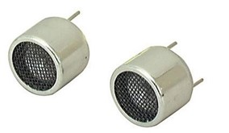
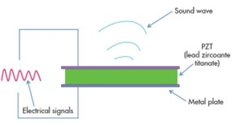
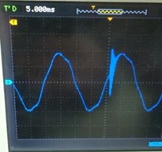
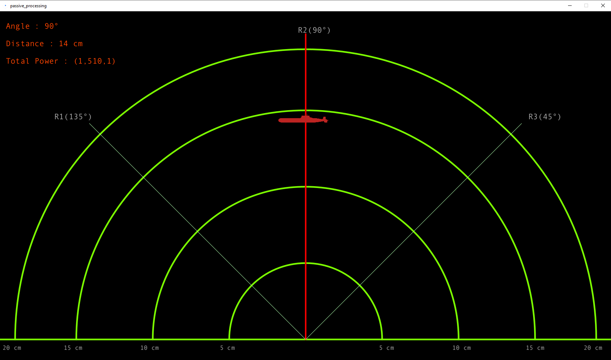

Passive Detection Sonar
"Silent Surveillance, Precise Detection: Mastering Security with Ultrasonic Innovation."
Project information
- Category: Hybrid Systems
- Purpose: Graduation Project (HTI)
- Project date: 01 Sep, 2022
- Project Team:
Ahmed Amin, Youssef Goher, Mazen Mohamed
Introduction: Redefining Security with Passive Detection
This project introduces a proprietary ultrasonic passive radar system designed to detect adversary radars without transmitting signals. The system ensures stealth operation, making it ideal for secure environments. Passive radar leverages the ultrasonic signals transmitted by other devices, processing them to determine the location, behavior, and characteristics of adversary systems.
Technical Objectives & System Challenges
- Detection: Create a system capable of detecting adversary radars without emitting signals.
- Accurate Signal Capture: Develop circuits to amplify and filter weak ultrasonic signals with minimal noise.
- Data Processing: Use proprietary algorithms to interpret radar signals in real-time.
- Robust Data Presentation: Provide a clear display interface to present radar data effectively.
System Architecture and Methodology
1. Ultrasonic Wave Detection Technology
-
400SR160 Ultrasonic Receiver: A highly sensitive receiver capturing ultrasonic signals at 40 kHz.

Description: The 400SR160 receiver with labeled components, highlighting the sensitivity and frequency range.
-
Proprietary Transducer Circuit: Converts ultrasonic vibrations into electrical signals using piezoelectric crystals for efficient detection.

Description: Schematic of the piezoelectric transducer circuit, illustrating signal conversion.
2. Amplification and Filtering Circuits
-
LM324 Operational Amplifier: Used to boost weak signals, achieving a 10:1 gain ratio through precise resistor selection.

Description: Oscilloscope output showing amplified signals with noise interference.
-
RC Envelope Detection Circuit: Extends signal duration and smooths out noise for accurate ADC sampling.

Description: Oscilloscope output showing amplified signals extended time duration
3. Analog-to-Digital Conversion and Data Transmission
- Arduino Nano with ATmega328p: Digitizes ultrasonic signals through successive approximation ADC and sends them for further processing.
-
Proprietary Processing Interface: Transmits digital data to a secure Java application for real-time display.

Description: Flowchart showing data transfer from the sensors to the computer interface.
4. Visualization and User Interface
-
Java-Based Monitoring Application: Provides real-time visualization of signal strength, angle, and distance.

Description: Screenshot of the Java interface showing radar signal tracking in real-time.
Development Process and Implementation
Step 1: Circuit Prototyping and Testing
-
Prototype Setup: Prototyped circuits using voltage dividers, amplifiers, and filters to ensure minimal noise interference.

Description: Prototype setup showing key circuit components connected on a breadboard.
- Noise Reduction: Final design uses 1MΩ input resistors and 10MΩ feedback resistors for optimal performance.
Step 2: PCB Design and Assembly
-
PCB Layout: A custom PCB layout was designed to ensure efficient circuit assembly and signal routing.

Description: Screenshot of the PCB layout in Proteus software with labeled components.
-
Assembly: The PCB was assembled and soldered by hand, and the ultrasonic sensors were securely mounted.

Description: Fully Printed PCB with It's Traces
Step 3: Secure Data Transmission and Processing
- Data Transmission: Arduino Nano processed the signal data and transmitted it securely to the Java interface using UART serial.
-
AI-Powered Algorithm: An AI-powered curve fitting algorithm enhanced the accuracy of distance measurements.

Description: Graph showing curve fitting results for signal power against distance (Receiver no.1)
Performance Results and Technical Validation
Applications and Proprietary Advantages
- Military Surveillance: Stealth tracking of adversary radars without active signal transmission.
- Industrial Security: Non-invasive monitoring in secure environments.
- Underwater Exploration: Suitable for detecting acoustic signals in marine applications.
Proprietary Challenges and Solutions
- Noise Interference: Implemented custom filtering using 1MΩ resistors and envelope detection.
- Weak Signal Amplification: Achieved optimal amplification with LM324 and gain control circuitry.
- Short Signal Duration: Extended signal duration using RC circuits for reliable ADC sampling.
Technical Specifications
- Receiver: 400SR160 Ultrasonic Receiver
- Microcontroller: Arduino Nano (ATmega328p)
- Amplifier: LM324 Operational Amplifier
- Frequency Range: 40 kHz
- Software Interface: Secure Java Application
- Detection Range: 5 cm – 20 cm
Project Team
- Ahmed Amin : System Design / Signal Processing / Ai Algorithms
- Youssef Atef : Lead Researcher / Circuit Design
- Mazen Mohamed : Associate Researcher / Circuit Design
Supervised by: Dr. Mohamed A. Torad Assistant Professor of Wireless Communications